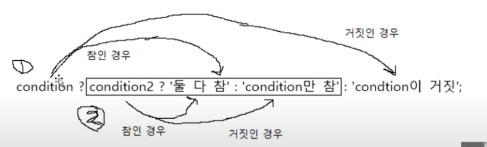

조건문
조건문(if)
조건문: 주어진 조건에 따라 코드를 실행하거나 실행하지 않는 문
기본형식: if(조건식){
동작문}
동작문이 하나 이상일 경우: if(조건식){
동작문1;
동작문2;
동작문3}
조건식 자리에 true로 형 변환되는 값(참인 값)이나 그것을 담고 있는 변수를 넣어도 된다.
조건문(else)
조건식이 true가 아닌 false일 때 다른 동작문을 실행하고 싶다면 else를 사용한다.
if(조건식){
동작문;
} else{
동작문;}
조건문(else if)
조건이 여러 개일 경우 사용 if else_if else_if else_if else_if else ...
if(조건식){
동작문;
} else if(조건식){
동작문;
} else{
동작문;}
if문에서 else와 else if는 선택이며 꼭 else로 끝나지 않아도 된다. if else_if else_if 순서도 사용 가능하다.
조건문은 위에서부터 아래로 실행된다.
중첩if문
if나 else, eles if 문으 중괄호 앙네 동작문을 넣을 수 있다는 사실을 활용할 수 있다.
조건문도 문이기 때뭉네 중괄호 안에 다시 넣을 수 있다.
중첩if문은 피하는 것이 좋다.
중첩 if문은 논리적으로 if_else if_else문으로 변환할 수 있다.
조건문이 중첩되어 들여쓰기가 깊어질수록 코드는 읽기 어려워진다.
따라서 중첩if문을 if_else if_else문으로 변환해 코드의 가독성을 높이길 권장한다.
조건문(switch)
switch(조건식){
case 비교조건식:
동작문;}
switch문에는 조건식 두 개가 사용된다.
switch 옆 소괄호 조건식의 값이 case의 비교 조건식 값과 일치(===)하면 해당 동작문이 실행된다.
보통 조건식에 변수를 넣고, 비교조건식에는 변수와 비교할 값을 넣는다.
switch문은 일치하는 case를 발견하면 일치 여부와 상관없이 그 아래 case들의 동작문을 모두 실행한다.
따라서 원하는 결과만 얻으려면 수동으로 case에서 빠져나와야 한다.
이때 break문이 사용된다.
break 중요!!
default는 if문의 else와 동일한 역할이다. 위치 상관 없이 맨 위나 맨 아래 위치 가능하다.
하지만 if문의 else는 마지막에만 위치할 수 있다.
비교조건식 분에 문자열만 들어오는 것은 아니다.
조건부 연산자(삼항 연산자)
if문과 switch문 외에도 분기 처리에 사용하는 식이 있는데 그것은 조건부 연산자(삼항 연산자)이다.
삼항 연산자의 기본 형식: 조건식 ? 참일 때 실행되는 식 : 거짓일 때 실행되는 식
조건부 연산자는 문이 아니라 식이기 때문에 결과값이 나온다.
조건부 연산자도 if문과 switch문처럼 중첩해서 사용이 가능하다.
condition3 ? condition4 ? '둘 다 참' : 'condition3만 참' : 'condition4이 거짓' 
들여쓰기 사용 가능하다.